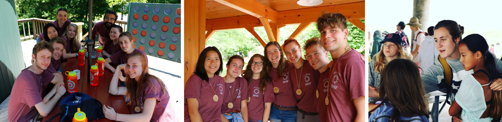
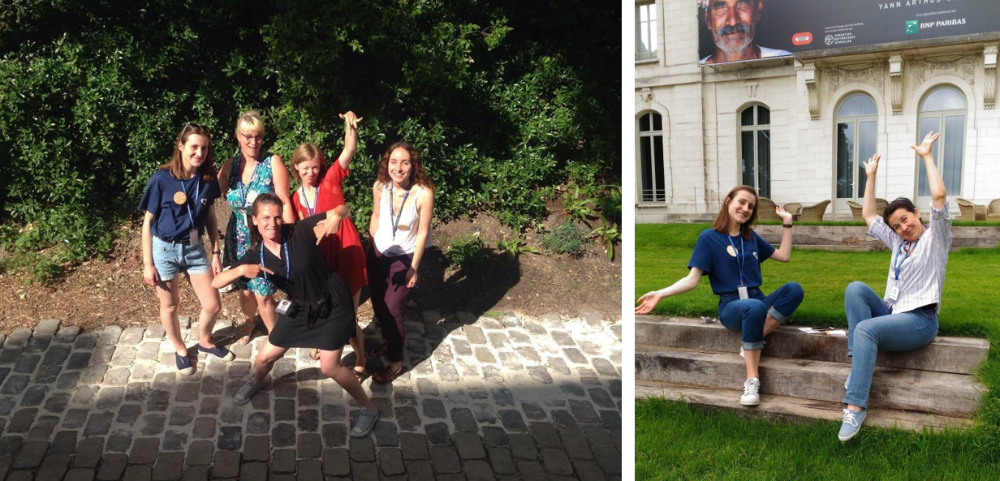

Here’s a glimpse of other professional and volunteering experiences that shaped my path.
CLC — Club Langues & Civilisations
📍 Bournemouth & Oxford, UK • 📅 2019
Role
Co-Head of a Linguistic Stay
What I did
Coordinated and supervised a cultural and language immersion program, ensuring participant safety,
logistical organization, and an enriching educational experience in an international setting.
🔗 Learn more about CLC
Windsor Mountain International
📍 New Hampshire, USA • 📅 2018
Role
Camp Counselor & Science Team Co-Head
What I did
Led and coordinated STEM-related activities within an international summer camp,
fostering teamwork, scientific curiosity, and engagement among campers from diverse backgrounds.
🔗 Learn more about Windsor Mountain

Opération Déclics
📍 Bordeaux, France • 📅 2023–2024
Role
Speaker
What I did
Presented my research to high-school students, promoting scientific curiosity,
facilitating discussions on biology-related topics, and raising awareness about research careers.
🔗 Learn more about DECLICS projects
GoodPlanet Foundation
📍 Paris, France • 📅 2022
Role
Volunteer
What I did
Contributed to environmental awareness initiatives linking sustainability, health,
and societal engagement through public outreach activities.
🔗 Learn more about GoodPlanet

L’Âge d’Or
📍 Grenoble, France • 📅 2020
Role
Digital Literacy Mentor
What I did
Supported senior participants in developing digital skills through individualized guidance,
promoting autonomy and confidence in the use of digital tools.
🔗 Learn more about L’Âge d’Or
Cercle Paul Bert
📍 Rennes, France • 📅 2018
Role
Academic Mentor
What I did
Provided academic support and mentorship to middle- and high-school students,
contributing to educational follow-up and academic confidence.
🔗 Learn more about CPB